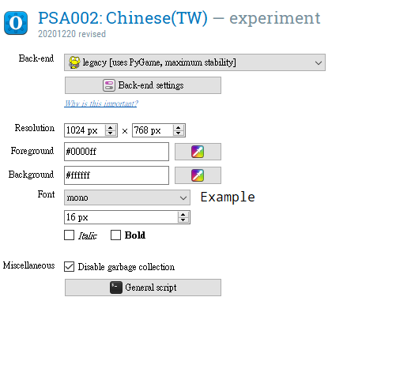

Open Sesame開工預備
開發者資訊
開發者Sebastiaan Mathôt等人發表於Behavior Research Methods的論文(Mathôt et al., 2012)，使用OpenSesame完成的研究，務必在報告中引用這篇論文。
使用者論壇：與開發者及其他使用者交流使用心得與問題。
下載與安裝
官方網站下載網頁
- 依照使用者的作業系統，下載對應的安裝檔或免安裝壓縮檔。
- Windows 10 11 執行安裝檔出現不建議安裝的訊息視窗時，選擇繼續安裝即可。
- Mac OS (1) 參考蘋果官方手冊，了解如何安裝未經官方認證的應用程式。 (2) 使用
Homebrew安裝，步驟如下：
- 開啟終端機視窗，複製下列指令至視窗內執行：
/bin/bash -c "$(curl -fsSL https://raw.githubusercontent.com/Homebrew/install/HEAD/install.sh)"- 執行完畢，重新開啟終端機視窗，複製下列指令至視窗內執行：
brew install --cask opensesame
- 安裝方式如同多數應用程式，建議安裝目錄設置在實驗程式相關路徑。例如
D:\EXP_APP\OpenSesame - 官方推出更新版本時，到官方下載網頁下載最新版本安裝程式，執行安裝程式即可更新。
- OpenSesame本體是一種Python IDE，熟悉Python的使用者可透過下載Python函式庫的方式安裝於任何作業系統。
腳本編輯器介面
下圖是直接開啓OpenSesame的初始使用者介面，圖中註解有關編輯與測試實驗腳本的重要功能及選單。

OpenSesame開啟畫面。
- 增加任何一個實驗元件到程序總覽畫面，可在編輯介面編輯元件內容。
- 程序總覽畫面內的元件由上而下依順序執行。
- 本機啟動或測試腳本，都會在腳本資料夾儲存結果(csv檔)。
- 啟動瀏覽器僅測試執行效果，不會儲存資料。
- 實驗程序要呈現圖片、聲音等外部媒體檔案，要放到刺激檔案總覽畫面之內。
必用實驗元件
一個腳本的程序由三種實驗元件構成
 腳本啟動元件
腳本啟動元件
- 創建新腳本就存在的元件。 - 設定執行引擎(Back-end)、螢幕解析度(Resolution)、前景色(Foreground)、背景色(Background)、預設字型(Font)

 執行序列控制元件
執行序列控制元件
- 第一個必設元件
- 置於序列元件下一層的元件依序執行
Run if欄位設定元件行條件： always ~ 腳本啟動後必執行; never ~ 腳本啟動後不執行

 迴圈序列控制元件
迴圈序列控制元件
- 設定一系列需要重覆執行的序列，例如連續的實驗嘗試。 - 上一階層必須設定執行序列控制元件 - 置於下一階層的執行序列控制元件是迴圈控制的重覆序列，例如實驗嘗試的刺激到反應事件。 - 可設定參數：停止條件(Break if); 最多重覆次數(Repeat); 呈現順序(Order); 內容來源(Source)

OSWeb功能
- 轉換OpenSesame本機腳本為JATOS伺服器可執行腳本的函式庫。
- 主選單“Tools -> OSWeb”切換至OSWeb介面。按鈕功能如下圖說明：

OSWeb介面及功能說明，功能詳見範例示範。
下一步：腳本設計
參考文獻
Mathôt, S., Schreij, D., & Theeuwes, J. (2012). OpenSesame: An open-source, graphical experiment builder for the social sciences. Behavior Research Methods, 44(2), 314–324. https://doi.org/10.3758/s13428-011-0168-7

本網站由慈濟大學人類發展與心理學系副教授陳紹慶創建維護，網站內容採用創用 CC 姓名標示-非商業性 4.0 國際 授權條款授權.